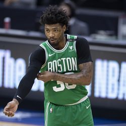
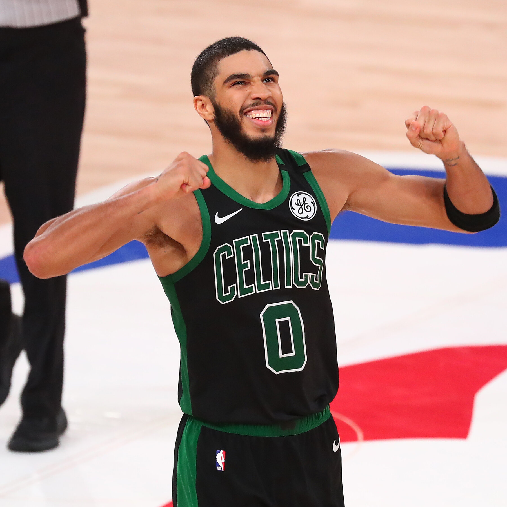
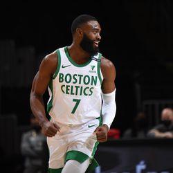
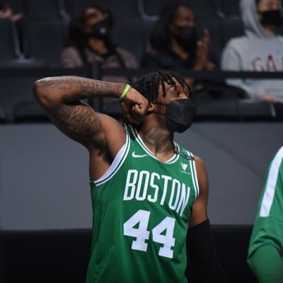
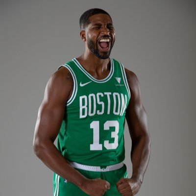

Over the last 75 years or so, The Boston Celtics have been one of the most notorious teams in the NBA. Since gaining entry into the league in 1946, the Celtics have won 17 championships which is tied for the most among all NBA franchises. The franchise is currently pursuing its 18th championship, and its first since 2008. The Celtics' winning history and rich tradition are one of the main reasons why it embodies one of the most loyal fanbases in all of sports.
Despite the historical success, this past season was a tough one for the Celtics. Although they were expected to be one of the top teams in the league, their success was derailed by injuries and players being forced to enter COVID protocol. Due to the difficulty of these challenges, they went on to win only 50% of their games as they finished with 36 wins and 36 losses after a 72 game season. This performance during the regular seasons was good enough to earn them a playoff spot with the top seeded Nets who had no difficulty ending the Celtics' season. This past season was definitely one that Celtics fans would like to forget.
After the 2021 season, it became clear that the Celtics needed to generate some staff turnover in order to have any hopes of achieving more success next season. To accomplish this, they promoted longtime head coach Brad Stevens to the President of Basketball Operations. To replace Brad as head coach, the Celtics decided to hire long time assistant Ime Udoka. In addition to the coaching change, the Celtics traded away starting point guard Kemba Walker for veteran Al Horford who makes his return to the Celtics. These changes have most Celtics fans feeling more hopeful for a much better 2022 season.
Looking ahead towards the 2022 season, it seems fair to suggest that the Celtics will be much improved. One thing that seems important to remember is the fact that the Celtics' best players are still very young with a lot more room to grow and develop into even better players. Their development will determine how far this team goes in the playoffs next season.
| Player | Description | 2021 Stats |
|---|---|---|
|  | Marcus Smart is the best defensive player on the Celtics, and arguably one of the best defensive guards in the entire NBA. Although a bit undersized at times standing at just 6'3" tall, Marcus more than makes up for it with his strength and desire to compete among the best players in the world. He is an emotional leader, and many would consider him the captain of this young team. | 13.1 PPG 3.5 RPG 5.7 APG |
|  | Jayson Tatum is typically considered to be the most talented player on this Celtics roster. Standing at 6'10" tall, he uses his athleticism and long arms to not only score at the highest level, but defend at a high level as well. A 3 level scorer with the ability to defend nearly everyone. It's no wonder why many consider Tatum a top 15 player in the entire league. The only thing left for Tatum to develop in terms of his basketball skills is his passing ability, but Tatum has improved in that area every year since entering the league. | 26.4 PPG 7.4 RPG 4.3 RPG |
|  | Jaylen Brown is Jayson Tatum's right hand man. The two of them make up one of the most dangerous duos in the entire league. Like Tatum, Brown's athleticism allows him to finish strong around the basket and through contact. Additionally, he is also capable of defending at a high level. Every single year it seems like Jaylen becomes a more polished player who continues to improve constantly. His athleticism is tremendous and his shot gets better every single season. | 24.7 PPG 6.0 RPG 3.4 APG |
|  | Robert Williams is the most vital bigman on this Celtics roster. Although he is just 23 years old and had injury troubles in the past, this past season was his most encouraging yet. In a playoff game against the Brooklyn Nets this past season, Rob has a career-high 9 blocks. This set a Celtics playoff record. There is plenty of time for him to continue improving his game and expanding his potential, but the Celtics need him to remain healthy in order to do so. | 8 PPG 6.9 RPG 1.8 BPG |
|  | Tristan Thompson is the other big man in the middle for the Celtics. Although he is undersized for a center at 6'9", Tristan's toughness and winning attitude make him a fantastic teammate and arguably the best offensive rebounder in the NBA. His veteran presence at age 30 makes him another important piece of this Celtics team. | 7.6 PPG 8.1 RPG 1.2 APG |